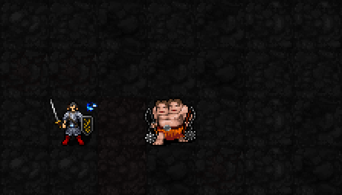

기존 승인 표시를 일반 플레이에 연결했습니다. 네 번째 적중에도 별이3개로 유지됩니다. native 엔진의 직접 주문 적중을 사용한 고정 시험장 영상이며,적HP는 검사 목적으로 높게 설정했습니다. 확대·반복만 적용했습니다.
| 성급·구분 | 수치 |
|---|---|
| 1성·패시브 / 수동 표적 변경 | 별 최대3개. 처치 보상1d(3+4S),별1/2/3 평균4/6/8. 3턴 내 다음 무기 공격·직접 주문에 추가 물리 피해,AC 적용. 별 자체가 평타 피해를 올리지는 않음 |
| 3성·액티브 | MP3·신앙3·1턴,사거리5. 2d(8+⌊I/2⌋)+5S. I12 별0/1/2/3 평균15/20/25/30,AC 전 |
| 5성·액티브 | MP6·신앙10·1턴,사거리6 고정3×3,시전 완료2턴 후낙하. 3d(10+⌊I/2⌋)+8S,표적만별추가. I12 평균25.5/33.5/41.5/49.5,AC 전 |
S는 별,I는 기도술. 기존 명중·소모·아군피해 규칙 유지. 실제피해·비용·착탄시각·저장복원·22신회귀 검사 통과 후 일반실행본에 배포했습니다.
예정 해금 신앙50 / 최소 기도술 없음 / MP·신앙·턴·별 소모 없음.
현재 표적에게 별2개 이상이면 명중+3. 근접·원거리·명중 판정이 있는 공격 주문에 적용하는 안입니다. 필중 공격·마법저항 판정에는 영향 없음. 명중률3% 증가라는 뜻은 아니며, 피해는 그대로입니다. 기도술과 무관하게 고정+3.
2성 효과와4성 별의 계승은 아직 미구현입니다. 이번에 실제 반영한 범위는 기존1·3·5성의3중첩 수치와 표시입니다.